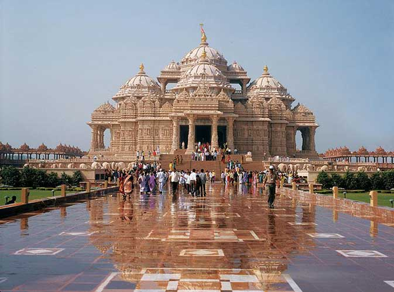
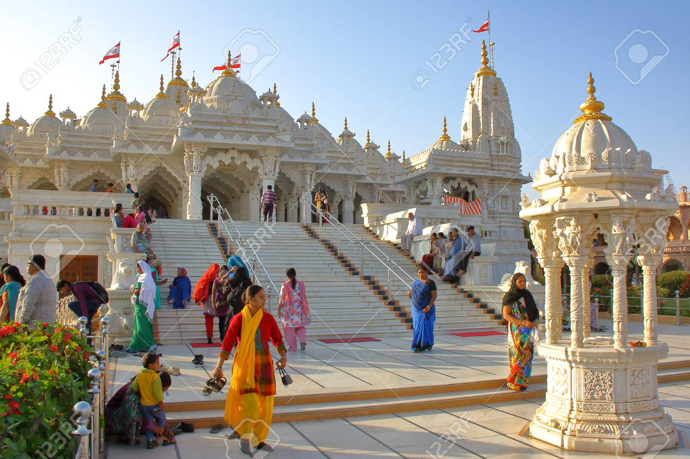
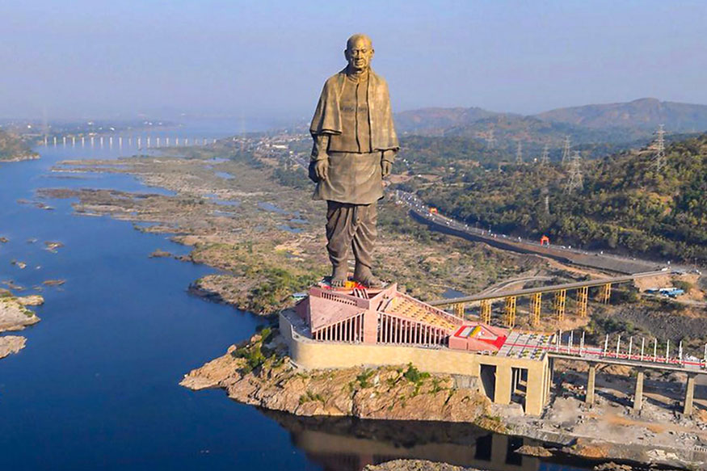
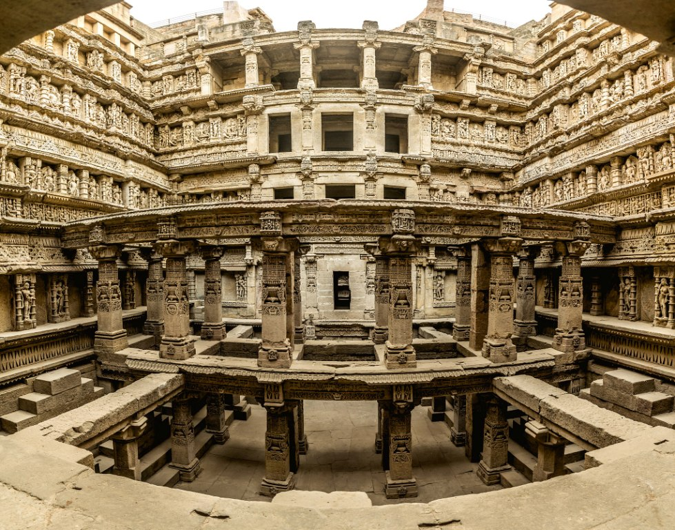

Gujarat is a state on the western coast of India with a coastline of 1,600 km (990 mi) – most of which lies on the Kathiawar peninsula – and a population in excess of 60 million. It is the fifth largest Indian state by area and the ninth largest state by population. Gujarat is bordered by Rajasthan to the northeast, Daman and Diu to the south, Dadra and Nagar Haveli and Maharashtra to the southeast, Madhya Pradesh to the east, and the Arabian Sea and the Pakistani province of Sindh to the west. Its capital city is Gandhinagar, while its largest city is Ahmedabad. The Gujarati-speaking people of India are indigenous to the state. The economy of Gujarat is the fifth-largest state economy in India with 17.02 lakh crore or US $251 billion in gross domestic product and a per capita GDP of 2,83,000 Rs or $4,100. Gujarat ranks fifteenth among Indian states in human development index.[5]
Gujarat's major cities include Ahmedabad, Surat, Vadodara, Rajkot, Jamnagar and Bhavnagar. In 2010, Forbes list of the world's fastest growing cities included Ahmedabad at number 3 after Chengdu and Chongqing from China. The state is rich in calcite, gypsum, manganese, lignite, bauxite, limestone, agate, feldspar, and quartz sand, and successful mining of these minerals is done in their specified areas. Jamnagar is the hub for manufacturing brass parts. Gujarat produces about 98% of India's required amount of soda ash, and gives the country about 78% of the national requirement of salt. It is one of India's most prosperous states, having a per-capita GDP significantly above India's average. Kalol, Khambhat, and Ankleshwar are today known for their oil and natural gas production. Dhuvaran has a thermal power station, which uses coal, oil, and gas. Also, on the Gulf of Khambhat, 50 kilometres (31 mi) southeast of Bhavnagar, is the Alang Ship Recycling Yard (the world's largest). MG Motor India manufactures its cars at Halol near Vadodara, Tata Motors manufactures the Tata Nano from Sanand near Ahmedabad, and AMW trucks are made near Bhuj. Surat, a city by the Gulf of Khambhat, is a hub of the global diamond trade. In 2003, 92% of the world's diamonds were cut and polished in Surat.[122] The diamond industry employs 500,000 people in Gujarat.